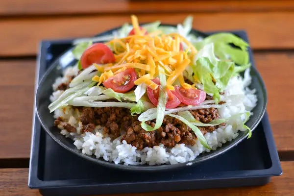

Taco Rice (タコリスト)

Time required: 30min
Ingredients with an * are optional
Ingredients
- White Rice
- Ground Beef or Pork mix
- Taco Seasoning
- * 1 Tomato
- * Black Olives
- * 1 Avocado
- * Corn Chips
- * 1 Onion
- * 1/2 Head of Letuce
Steps
- Cook the rice
- Dice tomato to preferred size
- Dice avocado to preferred size
- Dice or use cut olives
- Dice onion to preferred size
- Dice lettuce or cut into strips
- Crush corn chips to 1 cm size bits
- Brown ground beef/pork till no more pink is present
- Drain some of the oil
- Pour the seasoning and add the required amount of water
- Bring to a boil then simmer
- Scoop desired amount of rice into a bowl
- Place ground beef and desired ingredients
Back to home!